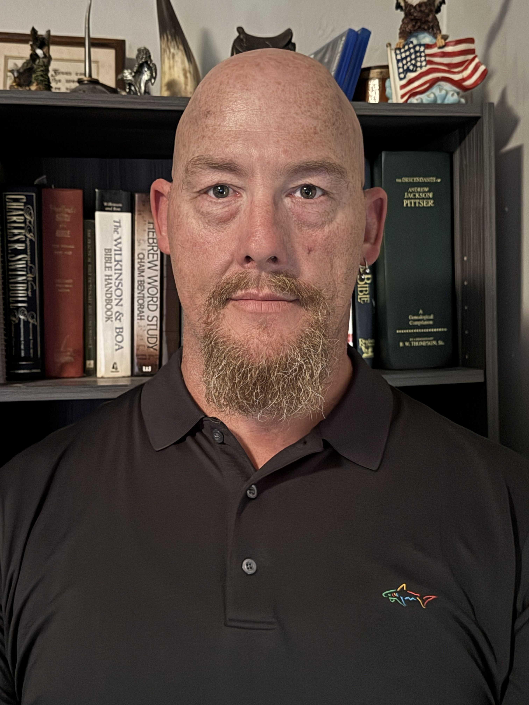

About Me
Building hands-on Linux and infrastructure experience through education and projects
I am an information technology student focused on Linux systems administration, infrastructure, troubleshooting, and cloud engineering.
My personal homelab gives me practical experience administering Ubuntu Linux systems, managing virtual machines with Proxmox VE, and working with SSH, Linux services, networking, and storage. I also use NFS, Docker and Portainer, reverse proxies, Cloudflare Tunnel, and WireGuard, with Ansible for Linux system maintenance and updates and Prometheus and Grafana for infrastructure monitoring. Maintaining this environment has developed my troubleshooting, system-maintenance, and technical-documentation skills.
Separately, my academic AWS capstone deployed a five-instance environment on Amazon Linux: three Linux application servers running SeedDMS with Apache and PHP, a dedicated MariaDB server, and an HAProxy load balancer. I configured HTTPS with a self-signed certificate and tested session persistence and application-server failover. This was an academic project, not professional employment.
I have also delivered a responsive website for ScapeLift Property Management as paid client work. My IT infrastructure experience, however, comes from personal homelab administration and academic projects—not professional Linux or cloud employment. I hold an Associate of Science in Information Technology and am working toward a Bachelor of Science in Information Technology. I am transitioning into IT and seeking an entry-level role where I can contribute a practical, troubleshooting-focused approach while continuing to grow.
